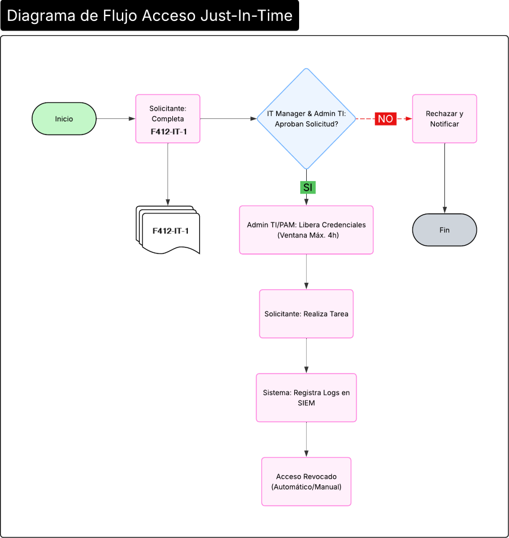

Procedimiento de Acceso Just-In-Time a Cuentas Privilegiadas
1 OBJETIVO
Establecer el proceso para la solicitud, aprobación, concesión temporal, uso, revocación y registro de accesos Just-In-Time (JIT) a cuentas con privilegios elevados en sistemas de información críticos. Este procedimiento garantiza que los privilegios administrativos solo sean activados por un período estrictamente necesario, bajo demanda y justificación, en cumplimiento del principio de mínimo privilegio y los controles de la MC421-IT-2 Política de Mínimos Privilegios Se opera con los recursos disponibles (Microsoft 365, Bitwarden) para cumplir las normativas de ISO/IEC 27001:2022 y los requisitos del marco TISAX y clientes automotrices.
2 ALCANCE
Este procedimiento aplica a:
- Todo el personal técnico (empleados y contratistas) que requiera acceso temporal a cuentas privilegiadas (ej.: administradores de sistemas, bases de datos, red) para realizar tareas de mantenimiento, resolución de incidentes o implementación de cambios.
- Todos los sistemas críticos bajo el alcance del Sistema de Gestión de la Seguridad de la Información (SGSI) donde se gestionen cuentas privilegiadas, incluyendo servidores, bases de datos, Active Directory y el ERP SIP 4.0.
- La gestión de credenciales se realiza a través de la herramienta Bitwarden y los flujos de trabajo con Microsoft 365 (Forms, Outlook, Entra ID).
3 DEFINICIONES
- Acceso Just-In-Time (JIT): Modelo de seguridad que concede permisos elevados de forma temporal y bajo demanda, revocándolos automática o manualmente una vez finalizada la tarea.
- Cuenta Privilegiada: Cuenta de usuario que posee permisos administrativos o de superusuario en un sistema, aplicación o base de datos.
- Sistema de Gestión de Accesos Privilegiados (PAM): Herramienta tecnológica utilizada para asegurar, controlar y monitorizar el acceso a cuentas privilegiadas.
- Bitwarden: Herramienta utilizada como repositorio seguro principal para el almacenamiento y gestión de las credenciales privilegiadas.
- Ventana de Acceso: Período de tiempo específico durante el cual se conceden los privilegios.
4 PROCEDIMIENTO
A continuación, se detalla el flujo para la gestión de accesos Just-In-Time:
4.1. Solicitud
- El Solicitante completa el formulario electrónico F412-IT-1
Solicitud de Acceso a Sistemas, el cual debe incluir:
- Sistema(s) y cuenta(s) privilegiada(s) específicas a las que se necesita acceso.
- Justificación técnica u operativa detallada (ej.: "Aplicación de parches críticos en el servidor").
- Ventana de acceso solicitada: Fecha.
4.2. Aprobación
- La solicitud es recibida por el IT Manager y el Administrador de IT.
- El IT Manager valida la justificación y la ventana de acceso. Puede solicitar información adicional o ajustar la duración.
- Una vez aprobada, la solicitud se deriva al Administrador de IT para su ejecución. Las solicitudes rechazadas se notifican al solicitante con la razón especificada a través de Microsoft Forms o correo corporativo.
4.3. Ejecución y Concesión del Acceso
- Preparación: El Administrador de IT accede a la herramienta Bitwarden para verificar la credencial de la cuenta solicitada.
- Cambio de Contraseña (Rotación): Antes de otorgar el acceso, el Administrador de IT debe cambiar la contraseña de la cuenta privilegiada a una nueva, compleja y aleatoria. La nueva contraseña se actualiza inmediatamente en Bitwarden. Este paso es crítico para romper cualquier sesión previa y establecer una credencial única para la ventana JIT.
- Entrega Segura: La nueva contraseña se compartirá
exclusivamente con el Solicitante aprobado. El método de entrega será:
- Un mensaje de correo electrónico encriptado marcado con la sensibilidad Confidencial utilizando las capacidades de Microsoft Purview.
- No se debe utilizar MS Teams, chats no seguros o canales no encriptados.
- Uso del Acceso: El Solicitante utilizará la credencial provista para realizar únicamente la tarea justificada. El acceso a los sistemas objetivo debe estar protegido con MFA (Autenticación Multifactor), siendo responsabilidad del Solicitante completar el desafío.
- Notificación de Finalización y Revocación: Inmediatamente después de completar la tarea, el Solicitante debe notificar por correo electrónico al Administrador de IT. Acto seguido, el Administrador de IT cambiará nuevamente la contraseña de la cuenta privilegiada, revocando efectivamente el acceso. La nueva contraseña se almacena en Bitwarden.
- Cierre de la Ventana: Si no hay notificación, el Administrador de IT cambiará la contraseña de manera forzosa al vencimiento de la ventana de acceso de 4 horas.
4.4. Registro y Monitorización
- Bitwarden: Los registros de auditoría internos de Bitwarden (quién accedió, cuándo) servirán como evidencia del manejo de credenciales.
- Microsoft Entra for Identity (MEI): Se configura para detectar y alertar sobre actividades de riesgo relacionadas con cuentas privilegiadas. (Ver Anexo 1: Configuración Básica de MEI para Monitoreo JIT).
- Logs del Sistema: Se deben habilitar y centralizar en el SIEM (por ejemplo, Microsoft Sentinel) los logs de auditoría de los sistemas destino (Windows Event Logs para cuentas de administrador, logs de administración de bases de datos, etc.) para correlacionar la actividad con la ventana de acceso JIT.
- Revisión: El Departamento de IT revisará trimestralmente los logs de Bitwarden, las alertas de MEI y una muestra de solicitudes JIT para verificar el cumplimiento.
5 REGISTROS Y EVIDENCIAS
- F412-IT-1 Formulario de Solicitud de Acceso a sistemas: Retención de 2 años tras la ejecución de la tarea.
- Registros de Auditoría de Bitwarden: Retención de 12 meses.
- Correos Electrónicos de Aprobación/Entrega de Credenciales/Notificación de Cierre: Archivados en la bandeja correspondiente del Administrador de IT con retención de 2 años.
- Alertas y Logs de Microsoft Entra for Identity: Retención de 12 meses en el entorno de Microsoft Entra ID.
- Logs de Auditoría de los Sistemas Objetivo: Retención de 12 meses en el SIEM.
6 DIAGRAMA DE FLUJO

Diagrama de flujo del procedimiento de acceso a cuentas privilegiadas
7 REVISIONES DEL DOCUMENTO
| Rev. N° | Fecha | Descripción |
|---|---|---|
| 0 | 25/8/2025 | Primera Emisión del documento |
| 1 | 5/2/2026 | Revisión completa del documento |